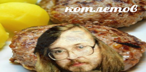
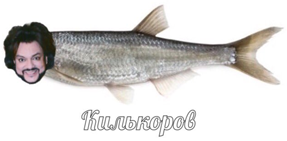
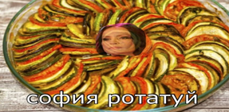
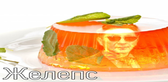
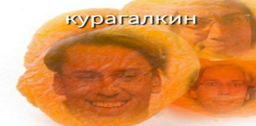
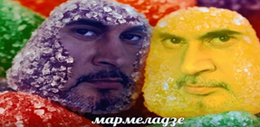

| МЕНЮ |
| Oy vey... How many shekels did this cost?! | |||
| Название | Описание | Цена | |
|  | "Граф Котлетов" — популярное во всём мире блюдо сибирской кухни, которое готовится из куриного фарша с добавлением плесени и липового мёда. | 200 р | |
|  | Заказывая редчайшую в своей природе рыбу и звезду эстрады в одной морде, вы соглашаетесь судиться за слуховые травмы и оскорбления на пресс-конференции только с самим блюдом, а не с рестораном. Подаётся с розовой кофточкой, грудью и микрофоном. | 400 р | |
|  | Традиционное овощное блюдо прованской кухни из перца, баклажанов и кабачков, во многом похожее на венгерское лечо, которое было, но прошло. | 250 р | |
|  | Обещает уехать в Лондон аж с 2012 года. Министерство финансов США (запрещённая на территории Первого канала организация) предупреждает: после употребления Желепса в пищу вы автоматически станете причастны к «постсоветской мафии» и будете внесены в «чёрный список». | 125 р | |
|  | Считается, что этот сорт сухофрукта лучше всех! Людей 1949 года рождения просим употреблять с осторожностью. | 130 р | |
|  | Лёгкий аромат белых мотыльков и бразильского танца не оставит равнодушным ни одного ценителя музыкальных сладостей. Перед употреблением просим убедиться в наличии танцевальной площадки поблизости. | 95 р | |
| КАК МЫ ГОТОВИМ |